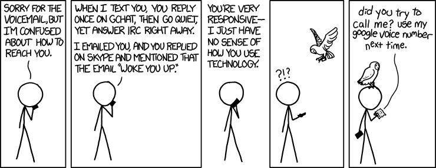

What is Slack?
Slack is a team communication tool
Inspired by old-days IRC and modern social platforms
It is a more productive way to share knowlegment in a team than email
One of the most successful startups in 2014
Andrés Pérez-Figueroa
http://about.me/anpefi
Slack is a team communication tool
Inspired by old-days IRC and modern social platforms
It is a more productive way to share knowlegment in a team than email
One of the most successful startups in 2014
There is an agent called slackbot that can do some tasks (reminders) by DM
Private groups are chatrooms where only invited members can read/write/share/search
Team owners and admins can export their team's Slack data
There is no native desktop app for Windows or Linux
You can edit your messages! (although this could be evil)
There is not a Team Calendar
 Strip by xkcd